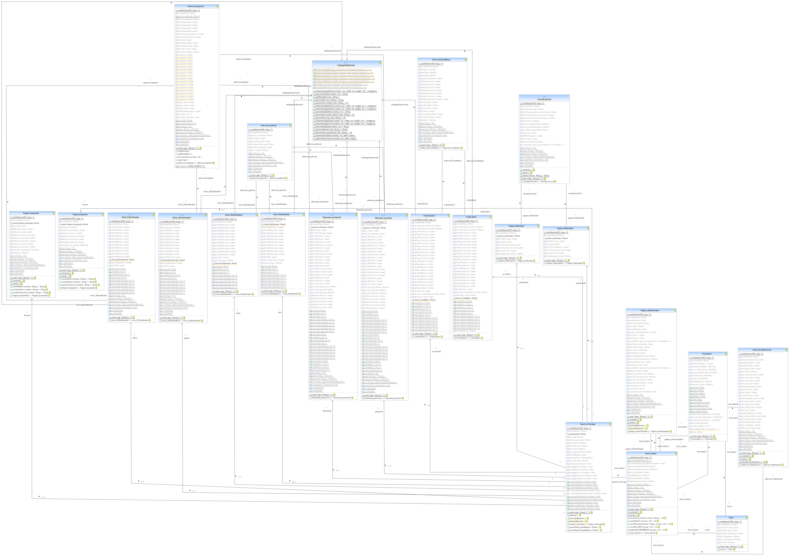
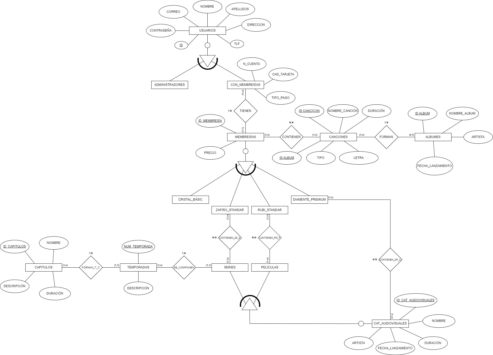

Diagrama UML
Modelo Entidad/Relación
Modelo relacional
Forma normal de Boyce Codd
Archivo .sql
Diagrama UML

Modelo Entidad/Relación

Modelo relacional
Descargar archivo pdf del modelo relacional
Forma normal de Boyce Codd
Descargar archivo pdf de la forma normal de Boyce Codd
Archivo .sql
Descargar archivo pdf del archivo .sql